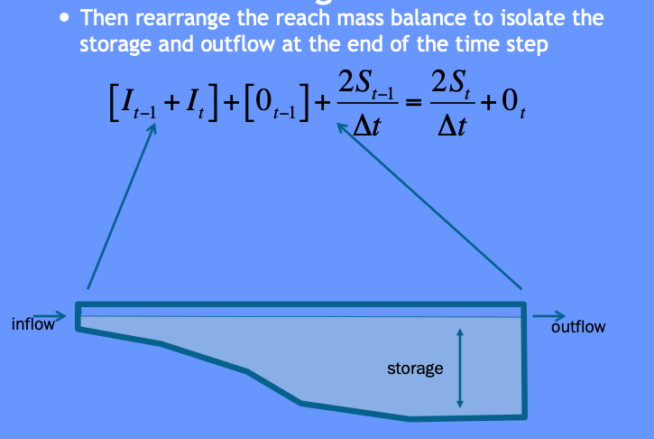
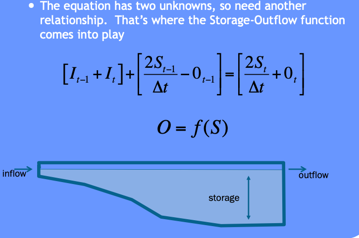
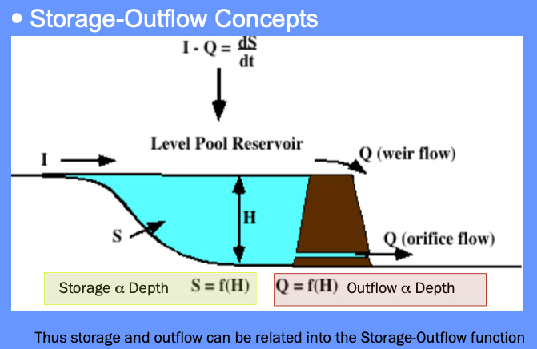
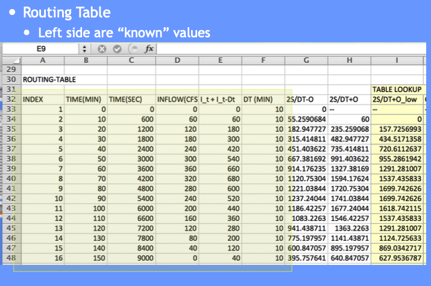
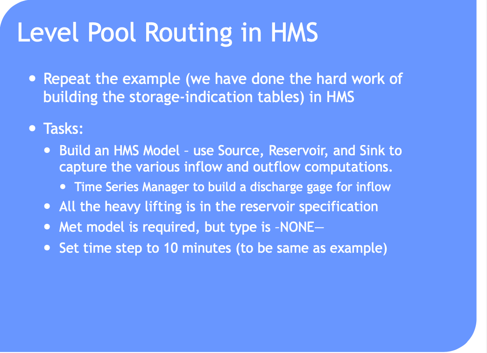
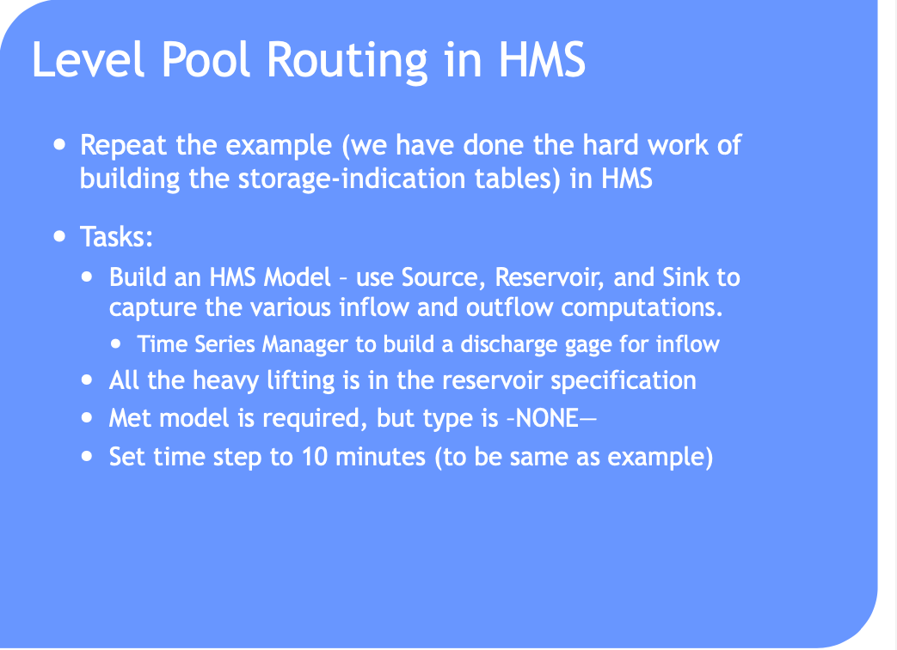
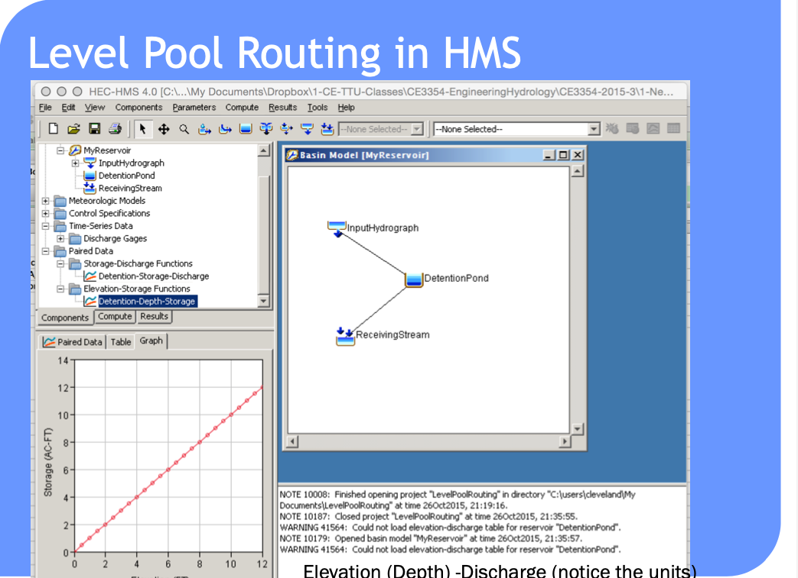
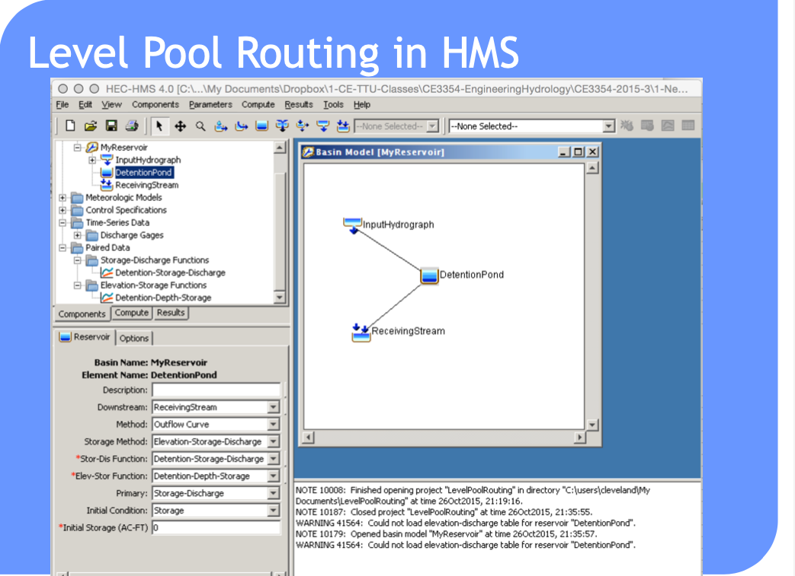
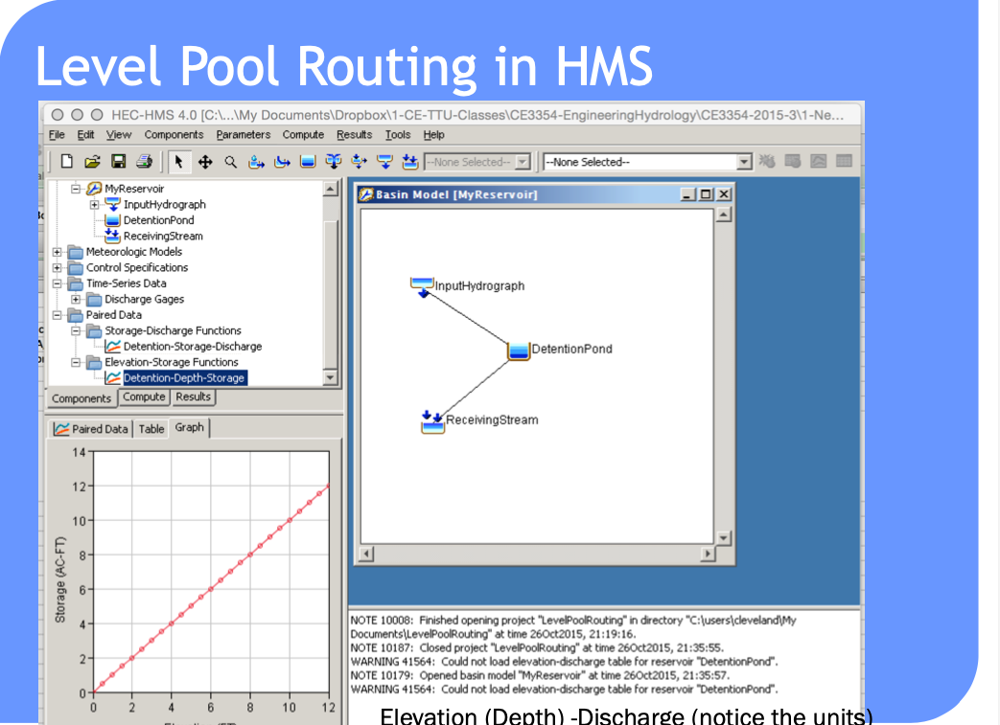
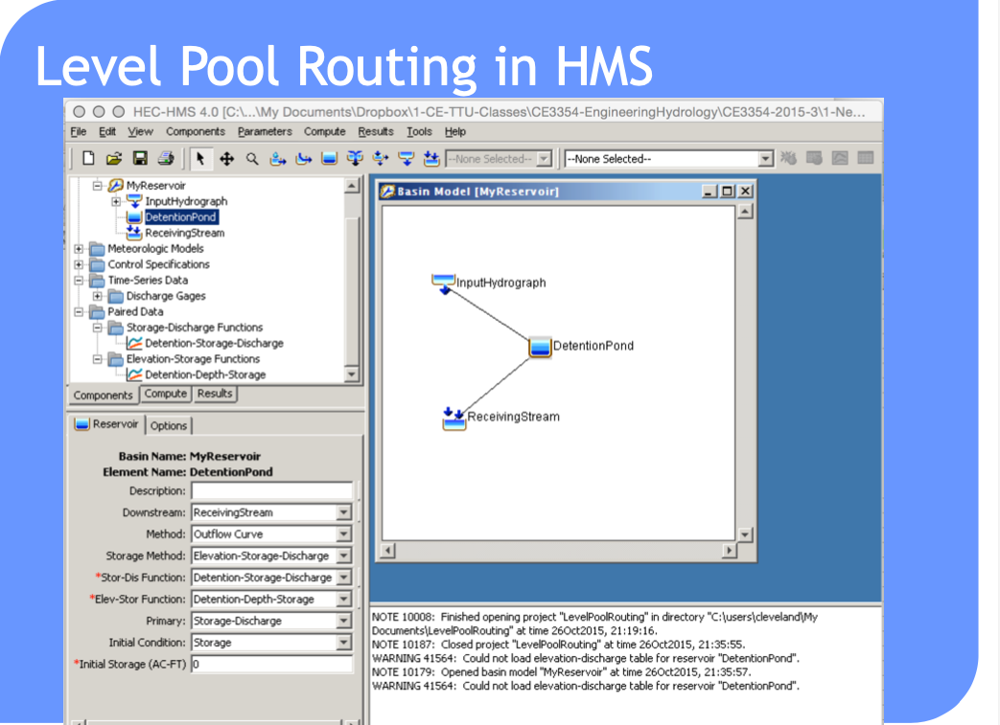

17. Routing Hydrographs¶
Course Website
Readings¶
Videos¶
Outline¶
What is “routing”?
The Routing “problem”
Probability estimation Modeling
Design Storms
Areal precipitation
ARF approach
Radar rainfall
Hydrograph routing¶
Hydrograph routing is a technique used in computational hydrology to predict the temporal distribution of water flow in rivers, channels, and reservoirs in response to inflow events. It involves calculating the downstream movement of water through a channel or watershed, accounting for the storage and movement of water within the system. The primary objective is to determine the changes in flow characteristics, such as discharge, over time and space as water travels from upstream to downstream points.
In practical applications, hydrograph routing is used for flood forecasting, design of hydraulic structures, and water resource management. There are two main types of routing:
Hydrologic Routing: This approach uses simplified methods based on the conservation of mass and empirical relationships. Techniques such as the Muskingum method, kinematic wave model, and unit hydrograph are common. Hydrologic routing is often used for its simplicity and efficiency, particularly in cases where detailed data is not available.
Hydraulic Routing: This method uses the principles of fluid mechanics, typically the continuity equation and the momentum equation (Saint-Venant equations), to model the movement of water through a channel. It provides detailed information about flow depth and velocity but requires comprehensive data and computational effort. (These techniques are introduced and applied in CE 3372 and are the subject of the entire course CE 4353)
Hydrograph routing informs how different factors, such as channel shape, roughness, and basin characteristics, influence the timing and magnitude of peak flows. The results are critical for designing effective flood control measures, optimizing reservoir operations, and designing suitable drainage systems.
Note
Routing simulates movement of a discharge signal (flood wave) through hydrologic/hydraulic elements called reaches.
Accounts for storage in the reach and flow resistance.
Allows modeling of a basin comprised of interconnected sub-basins (like the Hardin Branch project situation)
Hydrologic routing – uses continuity equation
Hydraulic routing – uses continuity and momentum (St. Venant Equations)
[insert some images]
Routing-Hydrologic and Hydraulic¶
Problem:
you have a hydrograph at one location (I)
you have reach characteristics (S = f(I,O))
Need:
a hydrograph at different location (O)
This is a “routing” situation. The “reach” can be a stream, river, reservoir or some similar feature; the element must have the ability to convey (transmit water) and accumulate (store water). Routing is not applied to overland flow per-se; although time-area methods are arguably a type of routing.

The bar heights (volumes in storage, entering, and leaving the hydrologic reach) as depicted below are usually quantified in a routing table - its conceptually like a bank account that relates revenue, expenses, and account balance.

Hydrologic Routing¶
Hydrologic routing techniques use the equation of continuity and some linear or curvilinear relation between storage and discharge within the river. The effects of momentum are neglected.
Methods include:
Lag Routing (no attenuation). Useful to get connectivity correct in a model
Modified Puls (level pool routing). Useful for reservoirs
Muskingum-Cunge (a simplified type of hydraulic model). Useful to approximate stream/river behavior without resorting to true “hydraulics” considerations
Level Pool Routing¶
Technique to approximate the outflow hydrograph passing through a reservoir with the pool (water surface) always level.
Uses a reach (reservoir) mass balance equation
and a storage-outflow relationship.
Variable names are typically changed:
\(Q_{in} => I_t\) and \(Q_{out} => O_t\)
So the reach mass balance is
The time averaged values are taken at the beginning and end of a useful time interval, and the first-order difference quotient is used to approximate the rate of change in storage.
The reach mass balance is then

Then some of that algebra stuff ….

More algebra stuff ….

Some more algebra still and recognize need to deal with two unknowns …

The storage-outflow function leverages hydraulics where possible. For example flow through holes (orifice flow), over spillways and weirs, and simplified culvert flow situations.



Use outlet-works hydraulics, and depth-area-storage to build a storage-outflow function
Once we have that function, then build an auxiliary function (tabulation) called the storage-indication curve (function)
here \(g\) is some function.
Once have the storage-indication curve then can use the reach mass balance to estimate the numerical value of :
Then use the storage-indication curve to find the value of outflow, subtract that from the result above, and now have both the end-of-interval outflow and storage.
Note
Probably should rewrite the example in Jupyter/iPython to be consistent with modern technology
Example¶
Similar to CMM 8.2.1 pg 247-252; but
Shows how the storage-indication curve is determined using hydraulics
Illustrate use of spreadsheet programming needed to make the actual computations

Tasks:
Build a depth-storage table
Build a depth-outflow table
From 0 to 5 feet deep use Manning’s equation in a circular conduit
From 5+ to 12 feet deep use Orifice equation (neglecting frictional losses)
Save a depth-storage-outflow table for use in storage-indication curve
Build the routing table (apply the reach mass balance)
For depth-outflow here is a Manning’s calculator.

Here is an orifice calculator.

# iPython Circular Mannings Calculator (Beware: No Error Checking!)
########### INPUT VALUES ################
manningsn = 0.013 # supply n value look up in a table
depth = 5.0 # depth in feet
diameter = 5.0 # culvert/outlet diameter in feet
slope = 0.003 # culvert/outlet slope (feet/feet)
########### MATH PACKAGE ################
import math
import sys
########### CALCULATIONS ################
angle = math.acos(1.0 - 2 * depth / diameter)
area = (diameter**2)*(angle-math.sin(angle)*math.cos(angle))/4.0
perimeter = angle*diameter
radius = area/perimeter
discharge = (1.49/manningsn)*area*(radius**(2/3))*math.sqrt(slope)
velocity = discharge/area
########### RESULTS ###############
print("Mannings n : %10.3f -- " %(manningsn))
print(" Depth : %10.3f ft. " %(depth))
print(" Diameter : %10.3f ft." %(diameter))
print(" Slope : %10.3f ft./ft." %(slope))
print(" Angle : %10.3f radians" %(angle))
print(" Area : %10.3f sq.ft." %(area))
print(" Perimeter : %10.3f ft." %(perimeter))
print(" Discharge : %10.3f cu.ft./sec" %(discharge))
print(" Velocity : %10.3f ft/sec" %(velocity))
Mannings n : 0.013 --
Depth : 5.000 ft.
Diameter : 5.000 ft.
Slope : 0.003 ft./ft.
Angle : 3.142 radians
Area : 19.635 sq.ft.
Perimeter : 15.708 ft.
Discharge : 143.034 cu.ft./sec
Velocity : 7.285 ft/sec
# iPython Orifice Calculator (Beware: No Error Checking!)
########### INPUT VALUES ################
coefficient = 0.574 # orifice coefficient (table lookup)
depth = 7.0 # depth above top of orifice in feet
diameter = 5.0 # orifice diameter in feet
slope = 0.003 # culvert/outlet slope (feet/feet)
########### MATH PACKAGE ################
import math
import sys
########### CALCULATIONS ################
if depth >= 0:
centerline = depth + diameter - 0.5*diameter
area = 0.25*math.pi*diameter**2
discharge = coefficient*area*math.sqrt(2.0*32.2*centerline)
velocity = discharge/area
else:
print("not orifice flow")
########### RESULTS ###############
print(" Orifice Coef : %10.3f -- " %(coefficient))
print(" Depth : %10.3f ft. " %(depth))
print(" Diameter : %10.3f ft." %(diameter))
print("Depth above centerline : %10.3f ft." %(centerline))
print(" Area : %10.3f sq.ft." %(area))
print(" Discharge : %10.3f cu.ft./sec" %(discharge))
print(" Velocity : %10.3f ft/sec" %(velocity))
Orifice Coef : 0.574 --
Depth : 7.000 ft.
Diameter : 5.000 ft.
Depth above centerline : 9.500 ft.
Area : 19.635 sq.ft.
Discharge : 278.770 cu.ft./sec
Velocity : 14.198 ft/sec
Use these and basin geometry to build depth-storage outflow table.

Copy the depth-storage-outflow to the routing table (we are going to build) – we need it as a tabulation so we can use INDEX and MATCH to get values from the table for interpolation (Eq. at bottom CMM pg 249)





The full spreadsheet, with the interpolation function as an Excel 94 macro sheet (you could code in place, will have a few more columns) is on server as Routing Example.
Such computations are a lot easier to perform in HEC-HMS because it handles (1) building the routing table and (2) selecting a decent time step
Can also use level pool routing for a stream reach (next meeting).
Reservoir Concepts¶
Reservoir
A pond, lake, or basin, either natural or artificial, for the storage, regulation, and control of water.
Regulated reservoir
Outflow controlled by moveable gates and valves.
Head, and valve settings determine outflow.
Unregulated reservoir.
Outflow controlled by fixed weirs and orifices.
Head and constructed weir height determine outflow.
Reservoir Storage¶
Storage Representations≈
Storage vs. Discharge
Storage vs. Elevation
Surface Area vs. Elevation

Discharge Representations
Spillways, Weirs
Orifices, Sluice gates
Pumps
Dam Breach

 



 





Routing-channel and reservoir¶
Reservoir routing
Account for storage in a reservoir
Unique storage-discharge relationship
Channel routing
Account for storage in channel as well as travel time
Storage-discharge relation in channel is non-unique
Can treat channel as a series of reservoirs to mitigate looped effect.